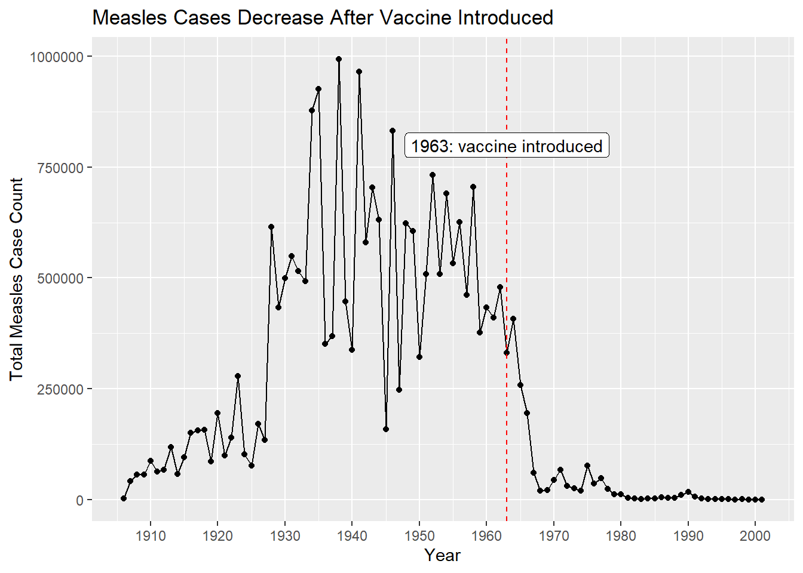
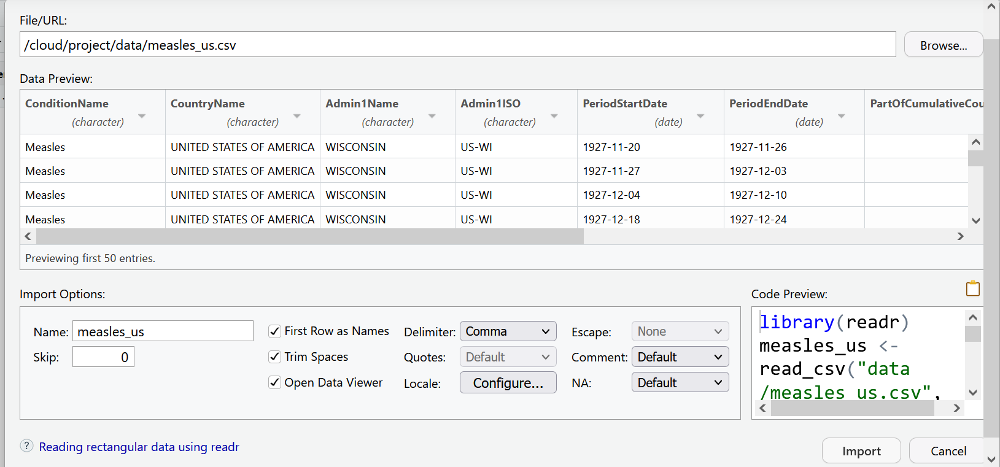

Chapter 3 Welcome to the Tidyverse
In this lesson we will be using a group of packages which are part of what is known as the tidyverse. These packages include :
readrfor importing data into Rdplyrfor handling common data wrangling tasks for tabular datatidyrwhich enables you to swiftly convert between different data formats (long vs. wide) for plotting and analysislubridatefor working with datesggplot2for visualizing data.
For the full list of tidyverse packages and documentation visit tidyverse.org You can install these packages individually, or you can install the entire tidyverse in one go.
3.1 Install
First we are going to use install.packages() to install tidyverse. Then we are going to load tidyverse with the library() function. You only need to install a package once, but you will load it each time you start a new r session. To learn more about dplyr and tidyr after the workshop, you may want to check out this handy data transformation with dplyr cheatsheet and this one about tidyr.
#install tidyverse if you haven't yet
#install.packages("tidyverse")
#load tidyverse
library(tidyverse)## ── Attaching packages ─────────────────────────────────────── tidyverse 1.3.1 ──## ✔ ggplot2 3.3.6 ✔ purrr 0.3.4
## ✔ tibble 3.1.7 ✔ dplyr 1.0.9
## ✔ tidyr 1.2.0 ✔ stringr 1.4.0
## ✔ readr 2.1.2 ✔ forcats 0.5.1## ── Conflicts ────────────────────────────────────────── tidyverse_conflicts() ──
## ✖ dplyr::filter() masks stats::filter()
## ✖ dplyr::lag() masks stats::lag()3.2 The Data
For this lesson we will be using data which comes from Project Tycho - an open data project from the University of Pittsburgh which provides standardized datasets on numerous diseases to aid global health research.
Throughout this lesson, we will be using a dataset from Project Tycho featuring historical counts of measles cases in the U.S.. We want to clean and present this data in a way that makes it easy to see how measles cases fluctuated over time.
Our end result will be this graph:

A useful feature of Project Tycho data is their use of a common set of variables. Read more about their data format.
3.3 Importing data
Now let’s import the data we’ll be working with. You can import data with code, or you can use RStudio’s GUI. Let’s look at both.
In the environment pane, select the button that says Import Dataset and choose the option From text (readr). This means we are going to be using the reader package, which is part of the tidyverse to read a file.

Select Browse in the dialog box that opens, and navigate to your data folder and choose the file called measles_us.csv


A new window will open with a spreadsheet view of the data. We can use this window to make some choices about how the data is imported.

RStudio will use the file name as the default name for your dataset, but you could change it to whatever you want. In this case measles_us works pretty well.
RStudio will also try to guess the data type of your columns. It will mostly get it right, but it is not unusual that you will manually need to tell it what data type certain columns are.
For example, let’s look at the columns PeriodStartDate and PeriodEndDate. These columns contain dates, but RStudio wants to read them as character data. This is very common when importing data. Let’s change these columns to the date data type, by using the drop down menu to select date data.

You will be asked to confirm that the input format of the date is %m/%d/%Y which is like writing mm/dd/YYYY. The program needs to know what the correct input date is so it can return the right output date YYYY-mm-dd, the international standard date format.

Now our data is ready to import. Your import screen should look like:

We can select the import button. But as you may have noticed, the code behind this import dialog box is also being generated. Use the clipboard icon to copy the code.
Let’s paste that into our script.R file.
So what does all this code actually mean?
We are using a function from the readr package called read_csv(). This function takes as an argument the path to where the file is located. This can take the form of an absolute path, a relative path to the working directory, or a url. The col_types argument lets you specify the data type by column name, and the na argument lets you specify the value that should be read as NA in your data set.
Remember to make sure you set your working directory before trying to import data!
library(readr)
measles_us <- read_csv(
"data/measles_us.csv",
col_types = cols(
PeriodStartDate = col_date(format = "%m/%d/%Y"),
PeriodEndDate = col_date(format = "%m/%d/%Y")),
na = "NA"
)View(measles_us)After reading the data, you will typically want to inspect it and make sure everything looks okay. There are several ways of doing this. In your script above, View() opens the data as a file in your documents pane.
The most basic way is to call the name of the object as we did in the last lesson with vectors. Since we used read_csv(), the object will print as a tibble. The problem with this, is that it will only show as many columns as can fit in your window. So it’s good to know a few other ways to look at your data.
measles_us## # A tibble: 422,051 × 9
## ConditionName CountryName Admin1Name Admin1ISO PeriodStartDate PeriodEndDate
## <chr> <chr> <chr> <chr> <date> <date>
## 1 Measles UNITED STAT… WISCONSIN US-WI 1927-11-20 1927-11-26
## 2 Measles UNITED STAT… WISCONSIN US-WI 1927-11-27 1927-12-03
## 3 Measles UNITED STAT… WISCONSIN US-WI 1927-12-04 1927-12-10
## 4 Measles UNITED STAT… WISCONSIN US-WI 1927-12-18 1927-12-24
## 5 Measles UNITED STAT… WISCONSIN US-WI 1927-12-25 1927-12-31
## 6 Measles UNITED STAT… WISCONSIN US-WI 1928-01-01 1928-01-07
## 7 Measles UNITED STAT… WISCONSIN US-WI 1928-01-08 1928-01-14
## 8 Measles UNITED STAT… WISCONSIN US-WI 1928-01-15 1928-01-21
## 9 Measles UNITED STAT… WISCONSIN US-WI 1928-01-22 1928-01-28
## 10 Measles UNITED STAT… WISCONSIN US-WI 1928-01-29 1928-02-04
## # … with 422,041 more rows, and 3 more variables:
## # PartOfCumulativeCountSeries <dbl>, SourceName <chr>, CountValue <dbl>The glimpse() function lets you see the column names and data types clearly. This function is part of the tibble package which is loaded with the core tidyverse.
#summary of columns and first few entries
glimpse(measles_us)## Rows: 422,051
## Columns: 9
## $ ConditionName <chr> "Measles", "Measles", "Measles", "Measles"…
## $ CountryName <chr> "UNITED STATES OF AMERICA", "UNITED STATES…
## $ Admin1Name <chr> "WISCONSIN", "WISCONSIN", "WISCONSIN", "WI…
## $ Admin1ISO <chr> "US-WI", "US-WI", "US-WI", "US-WI", "US-WI…
## $ PeriodStartDate <date> 1927-11-20, 1927-11-27, 1927-12-04, 1927-…
## $ PeriodEndDate <date> 1927-11-26, 1927-12-03, 1927-12-10, 1927-…
## $ PartOfCumulativeCountSeries <dbl> 0, 0, 0, 0, 0, 0, 0, 0, 0, 0, 0, 0, 0, 0, …
## $ SourceName <chr> "US Nationally Notifiable Disease Surveill…
## $ CountValue <dbl> 85, 120, 84, 106, 39, 45, 28, 140, 48, 85,…You can also use the head() function to view the first n rows. The function defaults to 6 rows, but you can specify the number you want with an argument. Below we ask to see just the first 5 rows.
#first n rows (defaults to 6)
head(measles_us, n = 5)## # A tibble: 5 × 9
## ConditionName CountryName Admin1Name Admin1ISO PeriodStartDate PeriodEndDate
## <chr> <chr> <chr> <chr> <date> <date>
## 1 Measles UNITED STATE… WISCONSIN US-WI 1927-11-20 1927-11-26
## 2 Measles UNITED STATE… WISCONSIN US-WI 1927-11-27 1927-12-03
## 3 Measles UNITED STATE… WISCONSIN US-WI 1927-12-04 1927-12-10
## 4 Measles UNITED STATE… WISCONSIN US-WI 1927-12-18 1927-12-24
## 5 Measles UNITED STATE… WISCONSIN US-WI 1927-12-25 1927-12-31
## # … with 3 more variables: PartOfCumulativeCountSeries <dbl>, SourceName <chr>,
## # CountValue <dbl>3.4 Working with columns
3.4.1 Select()
To select columns of a data frame, use select(). This is a great way to create a smaller data frame with only the variables you are interested in.
select() is a function. Remember that functions have arguments which go inside the parentheses. The first argument to this function is the name of the data object, which in this case is measles_us, and the subsequent arguments are the names of the columns we want to keep, separated by commas.
Let’s try selecting the Admin1Name column and the CountValue column.
select(measles_us, Admin1Name, CountValue)## # A tibble: 422,051 × 2
## Admin1Name CountValue
## <chr> <dbl>
## 1 WISCONSIN 85
## 2 WISCONSIN 120
## 3 WISCONSIN 84
## 4 WISCONSIN 106
## 5 WISCONSIN 39
## 6 WISCONSIN 45
## 7 WISCONSIN 28
## 8 WISCONSIN 140
## 9 WISCONSIN 48
## 10 WISCONSIN 85
## # … with 422,041 more rowsAs you can imagine, if you had a number of columns to select, it could get tiresome to write them all out. One way around this is to use a colon : to name a range of adjacent columns.
select(measles_us, ConditionName:Admin1ISO)## # A tibble: 422,051 × 4
## ConditionName CountryName Admin1Name Admin1ISO
## <chr> <chr> <chr> <chr>
## 1 Measles UNITED STATES OF AMERICA WISCONSIN US-WI
## 2 Measles UNITED STATES OF AMERICA WISCONSIN US-WI
## 3 Measles UNITED STATES OF AMERICA WISCONSIN US-WI
## 4 Measles UNITED STATES OF AMERICA WISCONSIN US-WI
## 5 Measles UNITED STATES OF AMERICA WISCONSIN US-WI
## 6 Measles UNITED STATES OF AMERICA WISCONSIN US-WI
## 7 Measles UNITED STATES OF AMERICA WISCONSIN US-WI
## 8 Measles UNITED STATES OF AMERICA WISCONSIN US-WI
## 9 Measles UNITED STATES OF AMERICA WISCONSIN US-WI
## 10 Measles UNITED STATES OF AMERICA WISCONSIN US-WI
## # … with 422,041 more rowsAnother helpful tool that the tidyverse provides is the pipe operator which looks like %>%. The pipe is made available via the magrittr package, installed automatically with dplyr. If you use RStudio, you can type the pipe with Ctrl + Shift + M if you have a PC or Cmd + Shift + M if you have a Mac.
With the pipe you start with your data object and pipe it to the function, rather than naming the data as your first argument. So, the pipe becomes especially valuable when you have a number of steps that you want to connect. Another benefit of using the pipe in RStudio is that the interface will supply column names to you in the auto complete. This helps so you do not need to remember sometimes lengthy column names, and you are less likely to get an error from a typo.
measles_us %>%
select(Admin1Name, PartOfCumulativeCountSeries)## # A tibble: 422,051 × 2
## Admin1Name PartOfCumulativeCountSeries
## <chr> <dbl>
## 1 WISCONSIN 0
## 2 WISCONSIN 0
## 3 WISCONSIN 0
## 4 WISCONSIN 0
## 5 WISCONSIN 0
## 6 WISCONSIN 0
## 7 WISCONSIN 0
## 8 WISCONSIN 0
## 9 WISCONSIN 0
## 10 WISCONSIN 0
## # … with 422,041 more rowsNow unfortunately, we did not save this to an object, so while it prints out to the console, we cannot really do anything with these results. So now, let’s think through which columns we want for our analysis and save this to a new object called measles_us_mod.
So if we look at our data, we see that the columns ConditionName, CountryName, and SourceName have the same values throughout the data set. So it seems redundant to keep those. Admin1ISO has redundant information to Admin1Name, so we can probably get rid of that as well. For this particular analysis we are going to take a state level view of measles, so we do not need Admin2Name and CityName either. That leaves us with Admin1Name, PeriodStartDate, PeriodEndDate, PartOfCumulativeCountSeries, and CountValue.
measles_us_mod <-
measles_us %>%
select(
Admin1Name,
PeriodStartDate,
PeriodEndDate,
PartOfCumulativeCountSeries,
CountValue
)
#inspect our new data frame
glimpse(measles_us_mod)## Rows: 422,051
## Columns: 5
## $ Admin1Name <chr> "WISCONSIN", "WISCONSIN", "WISCONSIN", "WI…
## $ PeriodStartDate <date> 1927-11-20, 1927-11-27, 1927-12-04, 1927-…
## $ PeriodEndDate <date> 1927-11-26, 1927-12-03, 1927-12-10, 1927-…
## $ PartOfCumulativeCountSeries <dbl> 0, 0, 0, 0, 0, 0, 0, 0, 0, 0, 0, 0, 0, 0, …
## $ CountValue <dbl> 85, 120, 84, 106, 39, 45, 28, 140, 48, 85,…Now when you look in your environment pane, you should see your new object which as the same number of rows but 6 instead of 11 columns (or variables)
3.4.2 Renaming columns
Sometimes when you receive data, you may find that the column names are not very descriptive or useful, and it may be necessary to rename them. You can assign new names to columns when you select them select(newColumnName = OldColumnName) or you can use the rename() function. Like naming objects, you should use a simple, descriptive, relatively short name without spaces for your column names.
measles_us_mod <-
rename(measles_us_mod, State = Admin1Name)3.4.3 Creating new columns with mutate()
Frequently you’ll want to create new columns based on the values in existing columns, for example to do unit conversions, or to find the ratio of values in two columns. For this you can use the mutate() function. The transmute() function is similar, but replaces old columns with the new one.
We know that each row in our dataset represents some time span, but we’re not sure what that span is. Below we use mutate() to create a new column called Span, which gives the number of days between the PeriodEndDate column and the PeriodStartDate column. This is why it is important to make sure your date columns are parsed properly as dates when importing your data. If the dates had been left as character data, it would not have been possible to do arithmetic with them.
measles_us_mod <-
mutate(measles_us_mod, Span = PeriodEndDate - PeriodStartDate)
measles_us_mod## # A tibble: 422,051 × 6
## State PeriodStartDate PeriodEndDate PartOfCumulativeCou… CountValue Span
## <chr> <date> <date> <dbl> <dbl> <drt>
## 1 WISCONSIN 1927-11-20 1927-11-26 0 85 6 da…
## 2 WISCONSIN 1927-11-27 1927-12-03 0 120 6 da…
## 3 WISCONSIN 1927-12-04 1927-12-10 0 84 6 da…
## 4 WISCONSIN 1927-12-18 1927-12-24 0 106 6 da…
## 5 WISCONSIN 1927-12-25 1927-12-31 0 39 6 da…
## 6 WISCONSIN 1928-01-01 1928-01-07 0 45 6 da…
## 7 WISCONSIN 1928-01-08 1928-01-14 0 28 6 da…
## 8 WISCONSIN 1928-01-15 1928-01-21 0 140 6 da…
## 9 WISCONSIN 1928-01-22 1928-01-28 0 48 6 da…
## 10 WISCONSIN 1928-01-29 1928-02-04 0 85 6 da…
## # … with 422,041 more rowsIt’s hard to get a sense of what different time spans are present in our data. We can use the count() function to help us figure that out.
count(measles_us_mod,Span)## # A tibble: 59 × 2
## Span n
## <drtn> <int>
## 1 6 days 338063
## 2 13 days 558
## 3 20 days 693
## 4 27 days 782
## 5 34 days 857
## 6 41 days 929
## 7 48 days 913
## 8 55 days 997
## 9 62 days 1083
## 10 69 days 1136
## # … with 49 more rowsAll those different time spans will get us into trouble when we try to work with the data. So next we need to filter the dataset for only the rows we want.
3.5 Working with rows
3.5.1 filter()
select() lets us choose columns. To choose rows based on a specific criteria, we can use the filter() function. The arguments after the data frame are the condition(s) we want for our final dataframe to adhere to. Specify conditions using logical operator:
| operator | meaning |
|---|---|
| == | exactly equal |
| != | not equal to |
| < | less than |
| <= | less than or equal to |
| > | greater than |
| >= | greater than or equal to |
| x|y | x or y |
| x&y | x and y |
| !x | not x |
We’ll come back to our problem of different time spans in a moment. First, let’s try filtering our data by just one condition. We want to see just the rows that contain counts from Maryland.
measles_us_mod %>% filter(State == "MARYLAND")## # A tibble: 7,246 × 6
## State PeriodStartDate PeriodEndDate PartOfCumulativeCoun… CountValue Span
## <chr> <date> <date> <dbl> <dbl> <drt>
## 1 MARYLAND 1927-11-27 1927-12-03 0 64 6 da…
## 2 MARYLAND 1927-12-04 1927-12-10 0 88 6 da…
## 3 MARYLAND 1927-12-18 1927-12-24 0 105 6 da…
## 4 MARYLAND 1927-12-25 1927-12-31 0 109 6 da…
## 5 MARYLAND 1928-01-01 1928-01-07 0 175 6 da…
## 6 MARYLAND 1928-01-08 1928-01-14 0 249 6 da…
## 7 MARYLAND 1928-01-15 1928-01-21 0 345 6 da…
## 8 MARYLAND 1928-01-22 1928-01-28 0 365 6 da…
## 9 MARYLAND 1928-01-29 1928-02-04 0 504 6 da…
## 10 MARYLAND 1928-02-05 1928-02-11 0 563 6 da…
## # … with 7,236 more rowsWhen matching strings you must be exact. R is case-sensitive. So State == "Maryland" or State == "maryland" would return 0 rows.
You can add additional conditions to filter by, separated by commas or other logical operators like &, >, and >.
Below we want just the rows for Maryland, and only include periods where the count was more than 500 reported cases. Note that while you need quotation marks around character data, you do not need them around numeric data.
measles_us_mod %>%
filter(State == "MARYLAND" & CountValue > 500)## # A tibble: 328 × 6
## State PeriodStartDate PeriodEndDate PartOfCumulativeCoun… CountValue Span
## <chr> <date> <date> <dbl> <dbl> <drt>
## 1 MARYLAND 1928-01-29 1928-02-04 0 504 6 da…
## 2 MARYLAND 1928-02-05 1928-02-11 0 563 6 da…
## 3 MARYLAND 1928-02-12 1928-02-18 0 696 6 da…
## 4 MARYLAND 1928-02-19 1928-02-25 0 750 6 da…
## 5 MARYLAND 1928-02-26 1928-03-03 0 1012 6 da…
## 6 MARYLAND 1928-03-04 1928-03-10 0 951 6 da…
## 7 MARYLAND 1928-03-11 1928-03-17 0 1189 6 da…
## 8 MARYLAND 1928-03-18 1928-03-24 0 1163 6 da…
## 9 MARYLAND 1928-03-25 1928-03-31 0 1020 6 da…
## 10 MARYLAND 1928-04-01 1928-04-07 0 753 6 da…
## # … with 318 more rows3.5.2 Grouping and Summarizing data
Many data analysis tasks can be approached using the split-apply-combine paradigm: split the data into groups, apply some analysis to each group, and then combine the results. dplyr makes this very easy through the use of the group_by() function.
group_by() is often used together with summarize(), which collapses each group into a single-row summary of that group. group_by() takes as arguments the column names that contain the categorical variables for which you want to calculate the summary statistics.
Let’s return to our measles_us_mod data frame. To analyze this further, we need to separate out the rows that represent cumulative counts from the rows that have a fixed interval. So we use filter() as we did above, this time saving to a new object called non_cumulative_period.
#filter out cumulative counts
non_cumulative <-
measles_us_mod %>%
filter(PartOfCumulativeCountSeries == 0)How can we calculate the total number of measles cases in each state for each reported time period?
First we need to group our data by state, and then group by period. Remember that in our original data set each state contained counts for multiple municipalities. That means in our current data frame there will be multiple rows for each period that needs to be condensed.
#group - prepares for summary calculations
count_by_period <-
non_cumulative %>%
group_by(State, PeriodStartDate)
count_by_period## # A tibble: 337,637 × 6
## # Groups: State, PeriodStartDate [150,481]
## State PeriodStartDate PeriodEndDate PartOfCumulativeCou… CountValue Span
## <chr> <date> <date> <dbl> <dbl> <drt>
## 1 WISCONSIN 1927-11-20 1927-11-26 0 85 6 da…
## 2 WISCONSIN 1927-11-27 1927-12-03 0 120 6 da…
## 3 WISCONSIN 1927-12-04 1927-12-10 0 84 6 da…
## 4 WISCONSIN 1927-12-18 1927-12-24 0 106 6 da…
## 5 WISCONSIN 1927-12-25 1927-12-31 0 39 6 da…
## 6 WISCONSIN 1928-01-01 1928-01-07 0 45 6 da…
## 7 WISCONSIN 1928-01-08 1928-01-14 0 28 6 da…
## 8 WISCONSIN 1928-01-15 1928-01-21 0 140 6 da…
## 9 WISCONSIN 1928-01-22 1928-01-28 0 48 6 da…
## 10 WISCONSIN 1928-01-29 1928-02-04 0 85 6 da…
## # … with 337,627 more rowsWhen you inspect your new data frame, everything should look the same. Grouping prepares your data for summarize, but it does not do anything visually to the data.
Now let’s trying summarizing that data. summarize() takes the dataframe as it’s first argument, then you need to provide some calculation and the name for the new column where the results of that calculation will go. In this case, we will use the sum() function on the CountValue column and put this in a new column called TotalCount
count_by_period <-
non_cumulative %>%
group_by(State, PeriodStartDate) %>%
summarize(TotalCount = sum(CountValue))## `summarise()` has grouped output by 'State'. You can override using the
## `.groups` argument.Notice how the use of pipes really comes in handy here. It saved us from having to create and keep track of a number of intermediate objects.
Now each row in our dataset represents a week of data. It might be better if we can look at yearly trends. So, let’s try separating out the year from PeriodStartDate into its own column. In addition to mutate(), we will also use the year() function from lubridate. Since lubridate is not loaded with the core tidyverse let’s go ahead and load that now.
library(lubridate)##
## Attaching package: 'lubridate'## The following objects are masked from 'package:base':
##
## date, intersect, setdiff, unionRemember, you only need to install a package once, but you have to load it with each new session.
#Get year in separate column from PeriodStartDate
count_by_period <-
count_by_period %>%
mutate(Year = year(PeriodStartDate))
count_by_period## # A tibble: 150,481 × 4
## # Groups: State [56]
## State PeriodStartDate TotalCount Year
## <chr> <date> <dbl> <dbl>
## 1 ALABAMA 1909-05-23 1 1909
## 2 ALABAMA 1910-01-16 1 1910
## 3 ALABAMA 1910-02-06 13 1910
## 4 ALABAMA 1910-04-10 127 1910
## 5 ALABAMA 1910-04-17 81 1910
## 6 ALABAMA 1910-04-24 73 1910
## 7 ALABAMA 1910-05-01 62 1910
## 8 ALABAMA 1910-05-09 72 1910
## 9 ALABAMA 1910-05-15 39 1910
## 10 ALABAMA 1910-05-22 38 1910
## # … with 150,471 more rowsNow we can do our grouping and summarizing again as we did above.
#Get totals for each state each year.
yearly_count_state <-
count_by_period %>%
group_by(Year, State) %>%
summarise(TotalCount = sum(TotalCount))## `summarise()` has grouped output by 'Year'. You can override using the
## `.groups` argument.yearly_count_state## # A tibble: 4,210 × 3
## # Groups: Year [96]
## Year State TotalCount
## <dbl> <chr> <dbl>
## 1 1906 CALIFORNIA 224
## 2 1906 CONNECTICUT 23
## 3 1906 FLORIDA 4
## 4 1906 ILLINOIS 187
## 5 1906 INDIANA 20
## 6 1906 KENTUCKY 2
## 7 1906 MAINE 26
## 8 1906 MASSACHUSETTS 282
## 9 1906 MICHIGAN 320
## 10 1906 MISSOURI 274
## # … with 4,200 more rowsAlternatively, to see a national level summary, we could group just by Year
#Get totals each year.
yearly_count <-
count_by_period %>%
group_by(Year) %>%
summarise(TotalCount = sum(TotalCount))
yearly_count## # A tibble: 96 × 2
## Year TotalCount
## <dbl> <dbl>
## 1 1906 2345
## 2 1907 40699
## 3 1908 55632
## 4 1909 56317
## 5 1910 87191
## 6 1911 62306
## 7 1912 66388
## 8 1913 117571
## 9 1914 57363
## 10 1915 95507
## # … with 86 more rows3.6 Joining Datasets
Of course, looking at total counts in each state is not the most helpful metric without taking population into account. To rectify this, let’s try joining some historical population data with our measles data.
First we need to import the population data.
#load csv of populations by state over time, changing some of the datatypes from default
hist_pop_by_state <-
read_csv(
"data/Historical_Population_by_State.csv",
col_types = cols(ALASKA = col_double(), HAWAII = col_double())
)View(hist_pop_by_state)As we saw in our measles data import, the presence of NAs makes it necessary to explicitly state that the Hawaii and Alaska columns contain numerical data.
3.6.1 Long vs Wide formats
For data to be considered “tidy”, it should be in what is called “long” format. Each column is a variable, each row is an observation, and each cell is a value. Our state population data is in “wide” format, which is often preferable for human-readability, but is less ideal for machine-readability.
We will use the package tidyr and the function pivot_longer to convert our population data to a long format, thus making it easier to join with our measles data.
Each column in our population dataset represents a state. To make it tidy we are going to reduce those to one column called State with the state names as the values of the column. We will then need to create a new column for population containing the current cell values. To remember that the population data is provided in 1000s of persons, we will call this new column pop1000.
pivot_longer() takes four principal arguments:
- the data
- cols are the names of the columns we use to fill the new values variable (or to drop).
- the names_to column variable we wish to create from the cols provided.
- the values_to column variable we wish to create and fill with values associated with the cols provided.
library(tidyr)
hist_pop_long <- hist_pop_by_state %>%
pivot_longer(ALASKA:WYOMING,
names_to = "State",
values_to = "pop1000")View(hist_pop_long)Now our two datasets have similar structures, a column of state names, a column of years, and a column of values. Let’s join these two datasets by the state and year columns. Note that if both sets have the same column names, you do not need to specify anything in the by argument. We use a left join here which preserves all the rows in our measles dataset and adds the matching rows from the population dataset.
joined_df <-
left_join(yearly_count_state, hist_pop_long, by=c("State" = "State", "Year" = "DATE" ))
joined_df## # A tibble: 4,210 × 4
## # Groups: Year [96]
## Year State TotalCount pop1000
## <dbl> <chr> <dbl> <dbl>
## 1 1906 CALIFORNIA 224 1976
## 2 1906 CONNECTICUT 23 1033
## 3 1906 FLORIDA 4 628
## 4 1906 ILLINOIS 187 5309
## 5 1906 INDIANA 20 2663
## 6 1906 KENTUCKY 2 2234
## 7 1906 MAINE 26 729
## 8 1906 MASSACHUSETTS 282 3107
## 9 1906 MICHIGAN 320 2626
## 10 1906 MISSOURI 274 3223
## # … with 4,200 more rowsNow we can use our old friend mutate() to add a rate column calculated from the count and pop1000 columns.
#Add column for rate (per 1000) of measles
rate_by_year <- mutate(joined_df, rate = TotalCount / pop1000)
rate_by_year## # A tibble: 4,210 × 5
## # Groups: Year [96]
## Year State TotalCount pop1000 rate
## <dbl> <chr> <dbl> <dbl> <dbl>
## 1 1906 CALIFORNIA 224 1976 0.113
## 2 1906 CONNECTICUT 23 1033 0.0223
## 3 1906 FLORIDA 4 628 0.00637
## 4 1906 ILLINOIS 187 5309 0.0352
## 5 1906 INDIANA 20 2663 0.00751
## 6 1906 KENTUCKY 2 2234 0.000895
## 7 1906 MAINE 26 729 0.0357
## 8 1906 MASSACHUSETTS 282 3107 0.0908
## 9 1906 MICHIGAN 320 2626 0.122
## 10 1906 MISSOURI 274 3223 0.0850
## # … with 4,200 more rows